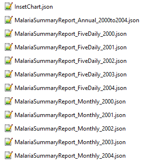
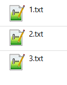

Model-specific input and output files¶
Input files¶
- EMOD: Uses multiple input files per scenario (e.g., demographics, configuration, and campaign files), generated in Python. [Format: JSON]
- malariasimulation: Does not use separate input files; model parameters are embedded within the R package. [Format: R]
- OpenMalaria: Uses a single input file per scenario, generated from a scaffold and predefined snippets. [Format: XML]
For details on configuring time-related parameters, see the time simulation guide.
EMOD¶
EMOD uses multiple input files to set up disease simulations, defining factors like how the disease spreads, population
details, and interventions.
For a detailed overview of these input files, refer to the official
documentation: https://docs.idmod.org/projects/emodpy-malaria/en/latest/emod/software-inputs.html.
Key input files:
- demographics file
- configuration file
- campaign file
- climate files
Implementation in MultiMalModPy:
- …
- …
- …
malariasimulation¶
malariasimulation comes with an R packages that includes all the necessary objects and configurations and no additional files are required.
Implementation in MultiMalModPy:
- a scenario CSV (scen_df.csv) is handled as an input for generate simulation scenarios
- simulation parameters are derived from the get_parameters function and overwritten with scenario specific parameters (view script here)
OpenMalaria¶
In OpenMalaria, each simulation scenario is defined by a single XML input file (more details on the OpenMalaria wiki here).
Implementation in MultiMalModPy:
- one XML main scaffold with placeholders for parameters or ‘snippets’ of XML lines to replace
- parameter replacements
@parameter_value@ - snippet replacements i.e.
@demography@is replaced by multiple lines (view demography snippet here) - a scenario CSV (
scen_df.csv) is handled as an input for generate simulation scenarios
Output files¶
- EMOD: Multiple output files per scenario, as specified by the user with varying time aggregation and outcome measures [Format: JSON, CSV]
- malariasimulation: Single output file, after first-stage postprocessing from the generated R object, with daily outcome measures as requested by the user [Format: CSV]
- OpenMalaria:: One (or two) output files per scenario, main output survey-based outcome metrics not-user-modifiable [Format: TXT]
EMOD¶
Output files
After a simulation finishes, a reporter extracts, aggregates, and saves the data as an output report in the working directory.
These reports summarize different aspects of the simulation and can be in JSON, CSV, or binary formats.
For a detailed overview of output files, refer to the official documentation:
https://docs.idmod.org/projects/emodpy-malaria/en/latest/emod/software-outputs.html
EMOD allows users to configure which reports are generated through specific settings.
By default, InsetChart.json is always created. More information described at:
https://docs.idmod.org/projects/emodpy-malaria/en/latest/emod/parameter-configuration-output.html
Key output files used in MultiMalModPy and examples:
- InsetChart.json
- MalariaSummary report
Implementation in MultiMalModPy:
- Raw output files are written into the EMOD specific experiments folder
experiments/<emod_id>/outputs. - Each output file is written into a scenario specific folder with unique IDs that are automatically assigned in
EMOD,MalariaSummaryReport_FiveDaily_2003.json,…,MalariaSummaryReport_FiveDaily_2003.jsonetc. - During postprocessing, data is extracted, transformed, and merged into a single CSV file(view the script here)
Under outputs within each of the scenario folders:

Truncated and simplified example output from a MalariaSummaryReport:
This example file shows output for 1 scenario, for 12 values for 1 year, for 8 age groups.
{
"Metadata": {
"Start_Day": 1096,
"Reporting_Interval": 5,
"Age Bins": [0.5, 1, 2, 5, 10, 15, 20, 100],
"Parasitemia Bins": [50, 500, 5000, 50000, 3.402823466385e+38],
"Gametocytemia Bins": [50, 500, 5000, 50000, 3.402823466385e+38],
"Infectiousness Bins": [20, 40, 60, 80, 100]
},
"DataByTime": {
"Time Of Report": [1101, 1106, 1111, 1116, 1121, 1126, 1131, 1136, 1141, 1146, 1151, 1156, 1161, 1166, 1171, 1176, 1181, 1186, 1191, 1196, 1201, 1206, 1211, 1216, 1221, 1226, 1231, 1236, 1241, 1246, 1251, 1256, 1261, 1266, 1271, 1276, 1281, 1286, 1291, 1296, 1301, 1306, 1311, 1316, 1321, 1326, 1331, 1336, 1341, 1346, 1351, 1356, 1361, 1366, 1371, 1376, 1381, 1386, 1391, 1396, 1401, 1406, 1411, 1416, 1421, 1426, 1431, 1436, 1441, 1446, 1451, 1456, 1460],
"Annual EIR": [0.26, 0.40, 0.29, 0.39, 0.32, 0.32, 0.32, 0.22, 0.40, 0.35, 0.18, 0.20, 0.18, 0.08, 0.03, 0.09, 0.20, 0.12, 0.12, 0.12, 0.15, 0.17, 0.28, 0.15, 0.22, 0.28, 0.40, 0.26, 0.28,
"PfPR_2to10": [0.129, 0.122, 0.116, 0.116, 0.116, 0.110, 0.101, 0.092, 0.084, 0.086, 0.081, 0.076, 0.072, 0.070, 0.066, 0.060, 0.058, 0.048, 0.048, 0.048, 0.049, 0.048, 0.044, 0.041, 0.038, 0.038, 0.037, 0.032, 0.031, 0.034, 0.036, 0.035, 0.035, 0.035, 0.034, 0.033, 0.035, 0.035, 0.038, 0.038, 0.038, 0.043, 0.049, 0.052, 0.057, 0.058, 0.061, 0.067, 0.080, 0.093, 0.104, 0.118, 0.133, 0.142, 0.145, 0.145, 0.152, 0.156, 0.161, 0.155, 0.155, 0.158, 0.155, 0.155, 0.155, 0.157, 0.153, 0.152, 0.146, 0.141, 0.138, 0.128, 0.119, 0.108]
"PfPR_2to10-True": [0.058, 0.055, 0.051, 0.050, 0.044, 0.047, 0.038, 0.038, 0.036, 0.031, 0.027, 0.026, 0.026, 0.026, 0.029, 0.026, 0.018, 0.013, 0.012, 0.015, 0.017, 0.017, 0.017, 0.017, 0.017, 0.017, 0.017, 0.017, 0.017, 0.017, 0.017, 0.017, 0.017, 0.017, 0.017, 0.017, 0.017, 0.017, 0.017, 0.017, 0.017, 0.017, 0.017, 0.018, 0.018, 0.019, 0.020, 0.020, 0.022, 0.025, 0.029, 0.034, 0.039, 0.041, 0.045, 0.050, 0.059, 0.068, 0.078, 0.087, 0.104, 0.108, 0.111, 0.109, 0.106, 0.104, 0.110, 0.111, 0.110, 0.093, 0.091, 0.095, 0.085, 0.079, 0.077, 0.080, 0.072, 0.071, 0.065, 0.064, 0.053, 0.049]
"No Infection Streak": [0, 0, 0, 0, 0, 0, 0, 0, 0, 0, 0, 0, 0, 0, 0, 0, 0, 0, 0, 0, 0, 0, 0, 0, 0, 0, 0, 0, 0, 0, 0, 0, 0, 0, 0, 0, 0, 0, 0, 0, 0, 0, 0, 0, 0, 0, 0, 0, 0, 0, 0, 0, 0, 0, 0, 0, 0, 0, 0, 0, 0, 0, 0, 0, 0, 0, 0, 0, 0, 0, 0, 0, 0],
"Fraction Days Under 1pct Infected": [0, 0, 0, 0, 0, 0, 0, 0, 0, 0, 0, 0, 0, 0, 0, 0, 0, 0, 0, 0, 0, 0, 0, 0, 0, 0, 0, 0, 0, 0, 0, 0, 0, 0, 0, 0, 0, 0, 0, 0, 0, 0, 0, 0, 0, 0, 0, 0, 0, 0, 0, 0, 0, 0, 0, 0, 0, 0, 0, 0, 0, 0, 0, 0, 0, 0, 0, 0, 0, 0, 0, 0, 0]
},
"DataByTimeAndAgeBins": {
"PfPR by Age Bin": [[0.006, 0.0359, 0.030, 0.090, 0.134, 0.225, 0.286, 0.220], [0.010, 0.033, 0.029, 0.079, 0.140, 0.210, 0.281, 0.207], [1, ...8 age bins], [1, ...8 age bins], [1, ...8 age bins], [1, ...8 age bins], [1, ...8 age bins], [1, ...8 age bins], [1, ...8 age bins], [1, ...8 age bins], [1, ...8 age bins], [1, ...8 age bins]]
"PfPR by Age Bin-True": [[1, ...8 age bins], [1, ...8 age bins], [1, ...8 age bins], [1, ...8 age bins], [1, ...8 age bins], [1, ...8 age bins], [1, ...8 age bins], [1, ...8 age bins], [1, ...8 age bins], [1, ...8 age bins], [1, ...8 age bins], [1, ...8 age bins]]
"Pf Gametocyte Prevalence by Age Bin": []
"Pf Gametocyte Prevalence by Age Bin-True": []
"Mean Log Parasite Density by Age Bin": []
"Mean Log Parasite Density by Age Bin-True": []
"New Infections by Age Bin": []
"Annual Clinical Incidence by Age Bin": []
"Annual Severe Incidence by Age Bin": []
"Average Population by Age Bin": []
"Annual Severe Incidence by Anemia by Age Bin": []
"Annual Severe Incidence by Parasites by Age Bin": []
"Annual Severe Incidence by Fever by Age Bin": []
"Annual Severe Anemia by Age Bin": []
"Annual Moderate Anemia by Age Bin": []
"Annual Mild Anemia by Age Bin": []
},
"DataByTimeAndPfPRBinsAndAgeBins": {
"PfPR by Parasitemia and Age Bin": [[...], [...], [...], [...], [...]]
"PfPR by Gametocytemia and Age Bin": []
"Smeared PfPR by Parasitemia and Age Bin": []
"Smeared PfPR by Gametocytemia and Age Bin": []
"Smeared True PfPR by Parasitemia and Age Bin": []
"Smeared True PfPR by Gametocytemia and Age Bin": []
},
"DataByTimeAndInfectiousnessBinsAndPfPRBinsAndAgeBins": {
"Infectiousness by Gametocytemia and Age Bin": [[...], [...], [...], [...], [...]]
"Age scaled Infectiousness by Gametocytemia and Age Bin": [],
"Infectiousness by smeared Gametocytemia and Age Bin": []
"Smeared Infectiousness by smeared Gametocytemia and Age Bin": []
"Age scaled Smeared Infectiousness by smeared Gametocytemia and Age Bin": []
}
}
malariasimulation¶
Implementation in MultiMalModPy:
- R object gets written into a CSV file.
- Raw output (CSV) files are written into the experiments folder
experiments/<SUITE>/<expname>/malariasimulation_jobs. - Each output file is labeled with a unique scenario index, resulting in simple numbered filenames
1_out.csv,…,100_out.csvetc. - During postprocessing, data is extracted, transformed, and merged into a single CSV file (view the script here)
Example CSV:
| timestep | infectivity | EIR_gamb | FOIM_gamb | mu_gamb | n_bitten | n_0_182 | n_inc_0_182 | p_inc_0_182 | n_183_365 | n_inc_183_365 | p_inc_183_365 | n_366_730 | n_inc_366_730 | p_inc_366_730 | n_731_1825 | n_inc_731_1825 | p_inc_731_1825 | n_1826_3650 | n_inc_1826_3650 | p_inc_1826_3650 | n_3651_5475 | n_inc_3651_5475 | p_inc_3651_5475 | n_5476_7300 | n_inc_5476_7300 | p_inc_5476_7300 | n_7301_36500 | n_inc_7301_36500 | p_inc_7301_36500 | n_inc_clinical_0_182 | p_inc_clinical_0_182 | n_inc_clinical_183_365 | p_inc_clinical_183_365 | n_inc_clinical_366_730 | p_inc_clinical_366_730 | n_inc_clinical_731_1825 | p_inc_clinical_731_1825 | n_inc_clinical_1826_3650 | p_inc_clinical_1826_3650 | n_inc_clinical_3651_5475 | p_inc_clinical_3651_5475 | n_inc_clinical_5476_7300 | p_inc_clinical_5476_7300 | n_inc_clinical_7301_36500 | p_inc_clinical_7301_36500 | n_inc_severe_0_182 | p_inc_severe_0_182 | n_inc_severe_183_365 | p_inc_severe_183_365 | n_inc_severe_366_730 | p_inc_severe_366_730 | n_inc_severe_731_1825 | p_inc_severe_731_1825 | n_inc_severe_1826_3650 | p_inc_severe_1826_3650 | n_inc_severe_3651_5475 | p_inc_severe_3651_5475 | n_inc_severe_5476_7300 | p_inc_severe_5476_7300 | n_inc_severe_7301_36500 | p_inc_severe_7301_36500 | n_infections | natural_deaths | S_count | A_count | D_count | U_count | Tr_count | ica_mean | icm_mean | ib_mean | id_mean | iva_mean | ivm_mean | n_detect_0_182 | p_detect_0_182 | n_detect_183_365 | p_detect_183_365 | n_detect_366_730 | p_detect_366_730 | n_detect_731_1825 | p_detect_731_1825 | n_detect_1826_3650 | p_detect_1826_3650 | n_detect_3651_5475 | p_detect_3651_5475 | n_detect_5476_7300 | p_detect_5476_7300 | n_detect_7301_36500 | p_detect_7301_36500 | n_730_3650 | n_detect_730_3650 | p_detect_730_3650 | E_gamb_count | L_gamb_count | P_gamb_count | Sm_gamb_count | Pm_gamb_count | Im_gamb_count | total_M_gamb | index | cm_clinical | seasonality | seed |
|---|---|---|---|---|---|---|---|---|---|---|---|---|---|---|---|---|---|---|---|---|---|---|---|---|---|---|---|---|---|---|---|---|---|---|---|---|---|---|---|---|---|---|---|---|---|---|---|---|---|---|---|---|---|---|---|---|---|---|---|---|---|---|---|---|---|---|---|---|---|---|---|---|---|---|---|---|---|---|---|---|---|---|---|---|---|---|---|---|---|---|---|---|---|---|---|---|---|---|---|---|---|---|---|---|
| 1 | 0.023929 | 55.24666 | 0.007587 | 0.132 | 43 | 7 | 0 | 0 | 12 | 1 | 0.633199 | 17 | 1 | 0.50183 | 39 | 1 | 0.350403 | 79 | 2 | 2.624391 | 63 | 1 | 2.469632 | 53 | 3 | 1.737082 | 223 | 7 | 7.19469 | 0 | 0 | 0 | 0.552457 | 0 | 0.316279 | 0 | 0.014367 | 0 | 0.33811 | 0 | 0.005636 | 0 | 0.055698 | 0 | 0.040065 | 0 | 0 | 0 | 0.009605 | 0 | 0.002357 | 0 | 5.88E-05 | 0 | 6.04E-04 | 0 | 1.12E-05 | 0 | 6.44E-05 | 0 | 6.75E-05 | 16 | 0 | 63 | 366 | 3 | 68 | 0 | 106.8914 | 1.765447 | 113.104 | 62.14041 | 108.731 | 0.688289 | 5 | 4.99178 | 7 | 6.987666 | 10 | 9.972358 | 25 | 24.88486 | 56 | 57.18696 | 39 | 38.53884 | 20 | 22.97553 | 62 | 56.54915 | 118 | 81 | 82.07182 | 647645.3 | 18847.25 | 2808.176 | 15698.45 | 620.9452 | 223.3472 | 16542.74 | 1 | 0 | perennial | 1 |
| 2 | 0.023727 | 55.24666 | 0.007587 | 0.132 | 29 | 7 | 0 | 0 | 12 | 1 | 0.62706 | 17 | 0 | 0 | 39 | 1 | 0.350237 | 79 | 3 | 2.003338 | 63 | 0 | 0.340245 | 53 | 0 | 0 | 223 | 6 | 7.050952 | 0 | 0 | 1 | 0.527524 | 0 | 0 | 0 | 0.014112 | 0 | 0.082325 | 0 | 0 | 0 | 0 | 0 | 0.016113 | 0 | 0 | 0 | 0.008577 | 0 | 0 | 0 | 5.80E-05 | 0 | 1.87E-04 | 0 | 0 | 0 | 0 | 0 | 3.74E-05 | 12 | 0 | 63 | 364 | 3 | 70 | 0 | 106.9142 | 1.739253 | 113.1647 | 62.15641 | 108.7536 | 0.678455 | 5 | 4.991781 | 7 | 6.987506 | 10 | 9.972254 | 25 | 24.88475 | 55 | 55.21343 | 39 | 39.15634 | 25 | 22.29207 | 55 | 56.62215 | 118 | 80 | 80.09819 | 647641 | 18847.14 | 2808.181 | 15691.31 | 628.0852 | 223.3472 | 16542.74 | 1 | 0 | perennial | 1 |
| 3 | 0.023663 | 55.24666 | 0.007587 | 0.132 | 29 | 7 | 0 | 0 | 12 | 0 | 0 | 17 | 0 | 0 | 39 | 1 | 0.350244 | 79 | 1 | 1.154082 | 63 | 0 | 2.189253 | 53 | 2 | 1.080644 | 223 | 5 | 4.502856 | 0 | 0 | 0 | 0 | 0 | 0 | 0 | 0.014115 | 0 | 0.222163 | 0 | 0 | 0 | 0.089398 | 0 | 0.047611 | 0 | 0 | 0 | 0 | 0 | 0 | 0 | 5.79E-05 | 0 | 2.86E-04 | 0 | 0 | 0 | 9.01E-05 | 0 | 6.60E-05 | 10 | 0 | 63 | 363 | 4 | 70 | 0 | 106.9249 | 1.713449 | 113.1802 | 62.16028 | 108.7642 | 0.668761 | 5 | 4.991782 | 7 | 6.990581 | 10 | 9.972257 | 25 | 24.88471 | 54 | 55.21126 | 36 | 38.30837 | 17 | 22.28925 | 65 | 56.8969 | 118 | 79 | 80.09597 | 647639.3 | 18847.31 | 2808.166 | 15685.1 | 634.295 | 223.3472 | 16542.74 | 1 | 0 | perennial | 1 |
| 4 | 0.023497 | 55.24666 | 0.007587 | 0.132 | 34 | 7 | 1 | 0.669721 | 12 | 0 | 0 | 17 | 0 | 0 | 39 | 0 | 0.376109 | 79 | 1 | 1.476678 | 63 | 1 | 1.058949 | 53 | 0 | 0.342169 | 223 | 6 | 7.530663 | 0 | 0.063753 | 0 | 0 | 0 | 0 | 0 | 0 | 0 | 0.023001 | 0 | 0.00259 | 0 | 0 | 0 | 0.02173 | 0 | 0.003037 | 0 | 0 | 0 | 0 | 0 | 0 | 0 | 4.31E-05 | 0 | 6.99E-06 | 0 | 0 | 0 | 4.54E-05 | 11 | 0 | 62 | 363 | 3 | 72 | 0 | 106.9313 | 1.688027 | 113.1868 | 62.15959 | 108.7705 | 0.659205 | 5 | 4.991783 | 7 | 6.990582 | 10 | 9.972261 | 25 | 24.88467 | 56 | 54.23563 | 37 | 37.45204 | 21 | 21.72198 | 48 | 56.95933 | 118 | 81 | 79.1203 | 647638.4 | 18845.42 | 2808.31 | 15679.67 | 639.6958 | 223.3472 | 16542.71 | 1 | 0 | perennial | 1 |
| 5 | 0.023507 | 55.24666 | 0.007587 | 0.132 | 35 | 7 | 0 | 0 | 12 | 0 | 0 | 17 | 0 | 0 | 39 | 0 | 0.420354 | 79 | 0 | 1.761803 | 63 | 4 | 1.740675 | 53 | 2 | 1.414195 | 223 | 4 | 6.542305 | 0 | 0 | 0 | 0 | 0 | 0 | 0 | 0 | 0 | 0 | 0 | 0.062957 | 0 | 0.034283 | 0 | 0.020451 | 0 | 0 | 0 | 0 | 0 | 0 | 0 | 0 | 0 | 0 | 0 | 7.67E-05 | 0 | 4.11E-05 | 0 | 3.59E-05 | 11 | 0 | 61 | 363 | 3 | 73 | 0 | 106.9399 | 1.662982 | 113.2002 | 62.16124 | 108.7789 | 0.649786 | 6 | 5.98985 | 7 | 6.990584 | 10 | 9.972264 | 25 | 24.88463 | 53 | 53.24906 | 36 | 37.44715 | 23 | 21.71909 | 50 | 56.958 | 118 | 78 | 78.13369 | 647638.2 | 18847.14 | 2808.178 | 15674.99 | 644.3929 | 223.3472 | 16542.73 | 1 | 0 | perennial | 1 |
OpenMalaria¶
OpenMalaria simulations generate two types of output survey-based and continuous monitoring (details here).
Implementation in MultiMalModPy:
- Currently, MultiMalModPy only supports survey output.
- Raw output (TXT) files are written into the experiments folder
experiments/<SUITE>/<expname>/txt. - Each output file is labeled with a unique scenario index, resulting in simple numbered filenames
1.txt,…,100.txtetc. - During postprocessing, data is extracted, transformed, and merged into a single CSV file(view the script here)

(Example shows local run results, with default application Notepad++ to open TXT files)
Example TXT (truncated):
| survey number | third dimension | measure | value |
|---|---|---|---|
| 1 | 1 | 0 | 14 |
| 1 | 2 | 0 | 10 |
| 1 | 3 | 0 | 14 |
| 1 | 4 | 0 | 46 |
| 1 | 5 | 0 | 63 |
| 1 | 1 | 1 | 7 |
| 1 | 2 | 1 | 8 |
| 1 | 3 | 1 | 14 |
| 1 | 4 | 1 | 46 |
| 1 | 5 | 1 | 62 |
| 1 | 1 | 3 | 5 |
| 1 | 2 | 3 | 6 |
| 1 | 3 | 3 | 12 |
| 1 | 4 | 3 | 38 |
| 1 | 5 | 3 | 45 |
(Example shows a truncated TXT file with inserted column headers, that do not exist in the raw output)